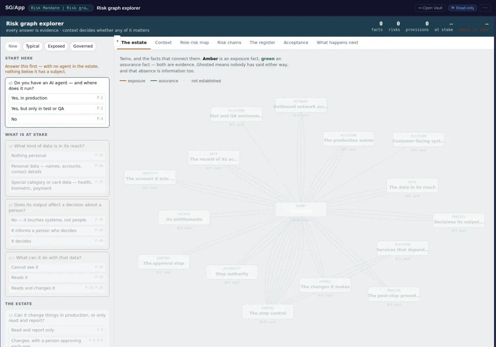
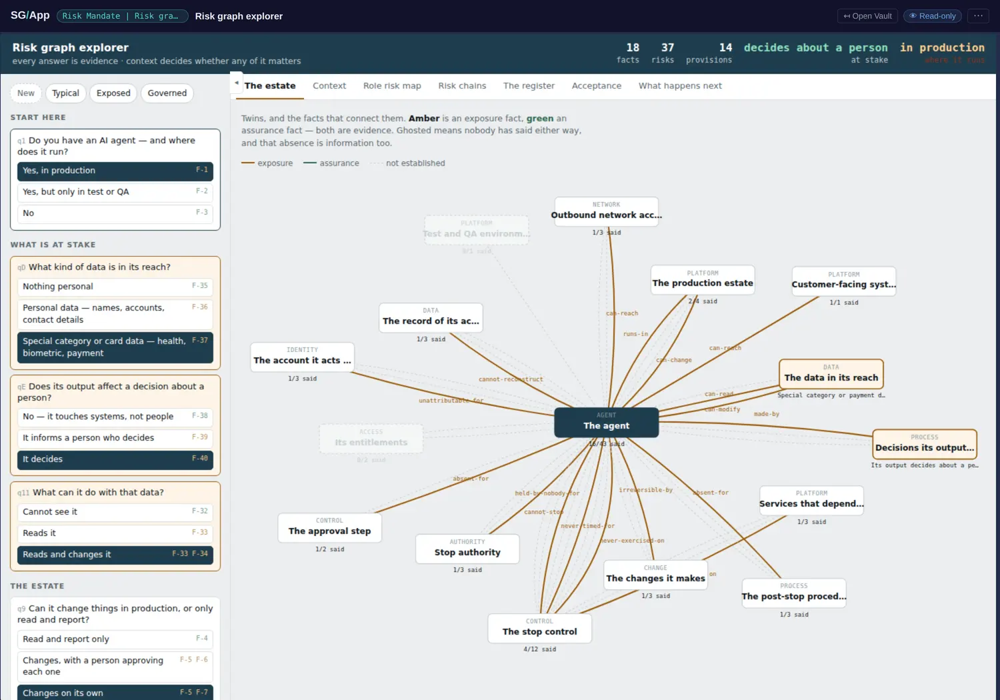
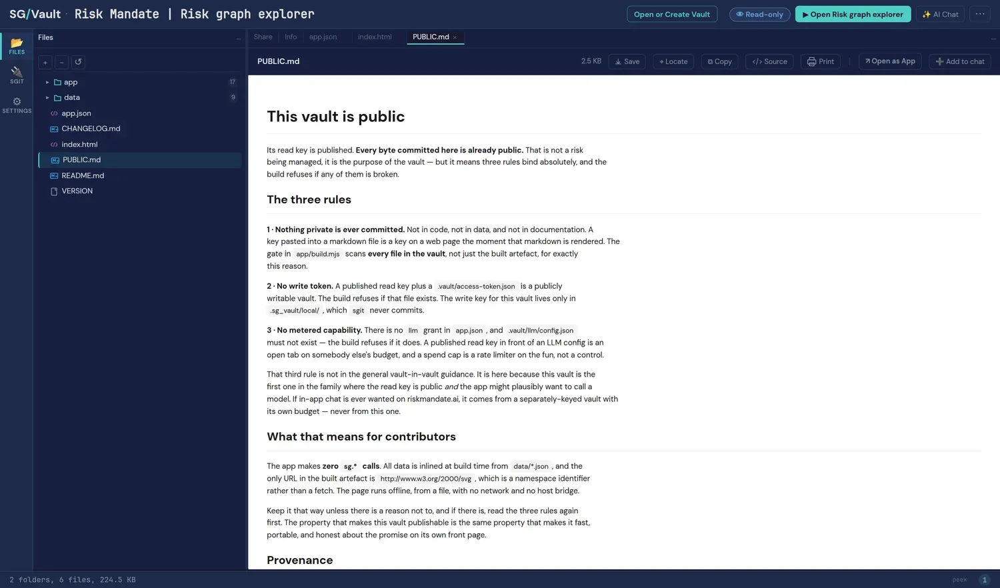
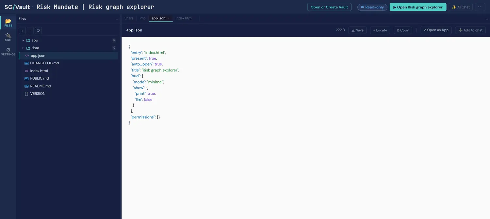

Risk Graph Explorer, opened
The graph explorer extracted out of the Risk Mandate work into a vault of its own, and the first vault here designed to be public from the start, with its publication rules enforced by its own build. Answer questions and a register assembles; seven views recompute as you go. Nothing you answer leaves the page: no network call, no storage, no account.
An empty register is a correct answer
It opens at zero facts, zero risks, zero provisions, and a prompt to answer the first question. Nothing is assumed about your estate until you say something about it — and the README states the claim plainly: "the technical answers can be as bad as you like — if nothing is at stake behind them, the register is short, and that is the correct answer."
That sentence is the sharpest statement of this book's own thesis anywhere in the estate, and it arrives from a completely different direction. A tool that produces the same output for a scratch service and a payments platform is a checklist, not a risk register: the meaning is not in the answers, it is in what those answers are connected to. Same value, differently connected, means something different — here with a register as the evidence rather than a port number.

Amber, green, and ghosted
Load the Exposed preset and the same questions produce 18 facts, 37 risks and 14 provisions, under a header reading decides about a person · in production · at stake. Seven views recompute together: the estate graph, context, a role risk map, risk chains, the register, acceptance, and what happens next.
Look at the edges rather than the counts. Amber is exposure, green is assurance, and ghosted means nobody has said either way. Recording that third state as information — rather than as an implicit pass — is the detail that makes this a graph and not a form, and it is the palette this site borrowed for its own diagrams. An unanswered question drawn as a ghost cannot be mistaken for a satisfied one, which is the mistake every red-amber-green table in the world quietly invites.

A vault that carries its own publication rules
Most vaults in the catalogue were audited by the publisher before their key went out. This one arrived with the audit written into it: a PUBLIC.md stating that every byte committed is already public, and a build that refuses if any of three rules is broken — nothing private committed (the gate scans every file, not just the built artefact), no write token, and no metered capability.
That third rule is the one the publisher had not written down, and its phrasing deserves quoting: "a published read key in front of an LLM config is an open tab on somebody else's budget, and a spend cap is a rate limiter on the fun, not a control." It sent them back to re-check a vault they had already published. A rule that makes its author re-audit finished work is a rule that was worth writing, and this is the second time in this catalogue that a control has found a gap in the process that produced it.

permissions: {}
An empty permissions object: not a scoped write, not a withheld credential — nothing requested at all. The app answers questions in the page, with no network call, no storage and no account. It is the floor of the capability scale, and the floor matters because it proves the scale has one: a system where everything must ask for something cannot express this asks for nothing.

Extraction as a pattern
This vault began as a section of a larger one. Pulling it out gave it a smaller audience surface, a shorter history, its own release cadence and, decisively, its own permission posture: the parent could plausibly want a model, this one may never have one, and says so.
The general form is worth keeping: vault boundaries are permission boundaries, so the question "should this be its own vault?" is usually the question "should this have a different key, a different audience, or a different set of capabilities?" Here the answer was all three, and the split is what made the public version safe to publish in a way the parent could not have been. That is the same reasoning this book applies to decoupling the book from the site, in a different currency: a boundary is worth drawing where the things either side of it need different permissions to exist.
Open it yourself
sgit clone sgit_rk1_1c1b95f5903e35850a9bc0541ffa09c6b5d4017cbf18817d2ad6f894127e5638:3simlnqe- Chapter 2 (the five ideas) gains the best restatement of its own thesis in the estate: an empty register is a correct answer, because meaning is in what the answers connect to.
- Chapter 7 (worked graphs) gains the amber/green/ghosted palette with its rationale: an unanswered relationship drawn as a ghost cannot be mistaken for a satisfied one.
- Chapter 12 (what ships) gains the
permissions: {}floor and the three publication rules, including the metered-capability rule that made its author re-audit published work. - The decoupling argument gains a second instance in another currency: a boundary is worth drawing where the two sides need different permissions.